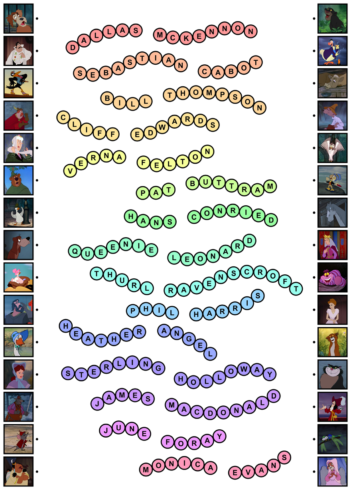
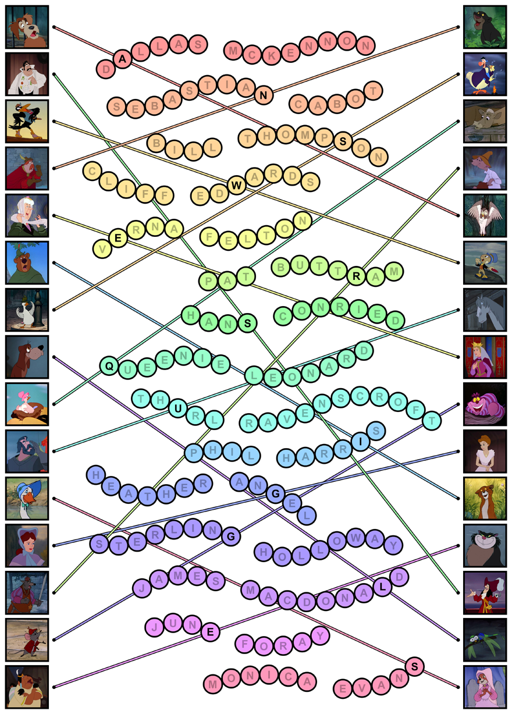

Author: Chris Lyon
Thirty cartoon characters are presented, each from a Disney animated feature film. There are fifteen on each side of the page, with dots next to them. In the middle are empty letter chains.
It was common for voice actors to fill many different roles for a studio. Fifteen actors are represented here, and their names fit uniquely into the chains. Each actor voices one character from the left column and one from the right column.
Actor |
Character |
Character |
| Dallas McKennon | Toughy (Lady and the Tramp) | Owl (Sleeping Beauty) |
| Sebastian Cabot | Sir Ector (The Sword in the Stone) | Bagheera (The Jungle Book) |
| Bill Thompson | Uncle Waldo (The Aristocats) | Dodo (Alice in Wonderland) |
| Cliff Edwards | Jim Crow (Dumbo) | Jiminy Cricket (Pinocchio) |
| Verna Felton | Aunt Sarah (Lady and the Tramp) | Queen Leah (Sleeping Beauty) |
| Pat Buttram | The Sheriff of Nottingham (Robin Hood) | Luke (The Rescuers) |
| Hans Conried | Mr. Darling (Peter Pan) | Captain Hook (Peter Pan) |
| Queenie Leonard | Bird in the Tree (Alice in Wonderland) | Princess (101 Dalmations) |
| Thurl Ravenscroft | Sir Bart (The Sword in the Stone) | Captain (101 Dalmations) |
| Phil Harris | Little John (Robin Hood) | Thomas O'Malley (The Aristocats) |
| Heather Angel | Alice's Sister (Alice in Wonderland) | Mrs. Darling (Peter Pan) |
| Sterling Holloway | Roquefort (The Aristocats) | Cheshire Cat (Alice in Wonderland) |
| James MacDonald | Bruno (Cinderella) | Evinrude (The Rescuers) |
| June Foray | Squaw (Peter Pan) | Lucifer (Cinderella) |
| Monica Evans | Abigail Gabble (The Aristocats) | Maid Marian (Robin Hood) |
Filling in the names of the actors:

When a line is drawn between the two characters, it will cleanly interesect exactly one letter in the name of the actor.

Reading top to bottom, this gives the phrase "ANSWER SQUIGGLES". The answer to the puzzle is SQUIGGLES.